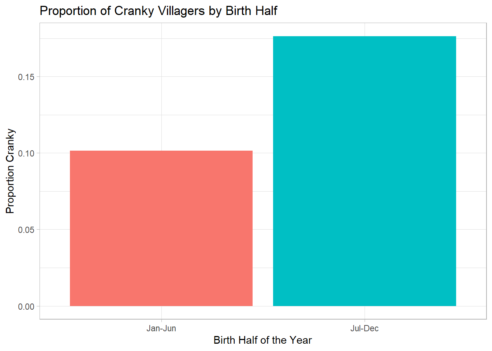
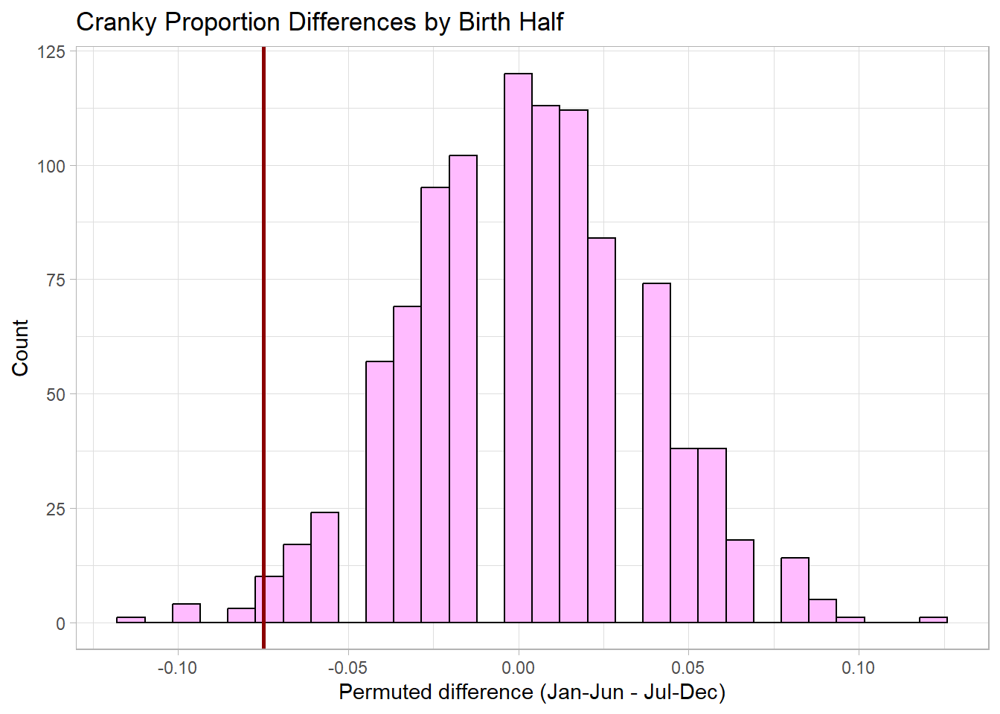

Analysis of Villagers from Animal Crossing New Horizons
Author
Phu Vo
Published
October 29, 2025
Introduction
For this week’s project, I decided to use the Animal Crossing: New Horizons Villager dataset from TinyTuesday, which was originally compiled from VillagerDB. In my analysis, I asked whether or not a villager’s birth half of the year (born between Jan. - June vs. born between July-Dec.) is associated with their personality– more specifically, if they are cranky or not. My hypothesis question would be, are villagers born in the first half of the year more or less likely to be cranky than those who are born later. I wanted to do this experiment because I realized most of my friends are born in the 2nd half of the year, more specifically Sept.-Nov., and I’m one of the only people born in the first half for some odd reason (Jan.). I thought it would be a great way to ragebait them and prove they are “just like the data” if I’m able to prove that people who are born in the latter half of the year are indeed more likely to be cranky than people born in the first half of the year.
Simulation Details (What I plan to do)
To test this, I conduct a permutation test simulating the null hypothesis (Ho) that there is no relationship between birth half and personality. My alternative hypothesis (Ha) says that people born in the latter half of the year, from July-Dec., are more likely to be cranky when compared to the first half of the year people. To derive this, I’ll first use lubridate to derive each villager’s birth month from the birthday variable and categorize them into Jan.-June or July-Dec. Then, I’ll calculate the observed differences in proportions of Cranky villagers between the two halves of the year. I wrote a function to randomly permute birth-half labels, recompute the difference in proportions, and return the value. Then, I used map_dbl() to repeat the process 1,000 times to generate a null-distribution of differences under random label assignment to estimate an empirical p-value by comparing the observed difference to the distribution of permuted differences. The first graph I’ll create shows the proportion of each personality across the two birth halves, to help visualize the observed data. The second graph is a histogram of the permutation distribution which shows what kind of proportion differences that should be expected if there was no true relationship between birth-half and crankiness.
Data Source
The data for the information about villagers comes from the TidyTuesday Animal Crossing: New Horizon dataset, available through the TidyTuesday Github Repository:Github. The information comes from Villager DB, which is a community-maintained database that compiles detailed profiles of all Animal Crossing villagers. I am currently unable to access this datasource or locate the individuals that put the data into a presentable form. Both the website VillagerDB and the Github repository are down, and after a quick Reddit search, I learned that they’ve been taken down recently, and I don’t know when it is coming back. For the original data in the game, the data was created by the developers, Nintendo, and the producer who “created” the Animal Crossing games would be Hisashi Nogami. More details about Animal Crossing and characters can be officially sourced to their website.
cranky_proportion <- villagers |>filter(!is.na(birth_half)) |>group_by(birth_half) |>summarize(cranky_prop =mean(personality =="Cranky") )cranky_proportion |>ggplot(aes(x = birth_half, y = cranky_prop, fill = birth_half)) +geom_col(show.legend =FALSE) +labs(title ="Proportion of Cranky Villagers by Birth Half",x ="Birth Half of the Year",y ="Proportion Cranky" ) +theme_light()

This bar chart shows the observed proportions of crankiness into two bins (Jan.-June births and July-Dec. births), which showed a difference of around 7.5 percentage points in proportion of crankiness in the villagers. Villagers born in the first half of the year have about 10% of their population having a cranky personality, while in the latter half of the year this proportion is around 17.5%.
tibble(diff = permutation_diff) |>ggplot(aes(x = diff)) +geom_histogram(bins =30, fill ="plum1", color ="black") +geom_vline(xintercept = observed_diff, color ="red4", linewidth =1.0) +labs(title ="Cranky Proportion Differences by Birth Half",x ="Permuted difference (Jan-Jun - Jul-Dec)",y ="Count" ) +theme_light()

This histogram displays the permutation distribution of proportion differences under the null hypothesis, with the vertical line marking the observed difference. The plot shows that the observed value lies at the edge of the simulated distribution, rather than at a 0.00 permuted difference, which provides visual evidence against the null hypothesis.
Simulation Details (cont.) (What I did, Results Summary)
In this simulation, I performed a permutation test to evaluate whether villagers born in the first half of the year (January–June) were more or less likely to be cranky than those born in the latter half (July–December). After categorizing villagers by their birth month and calculating the observed difference in proportions, I found that the proportion of cranky villagers was higher in the July–December group. The observed difference was approximately −0.0749, meaning the first-half group had about roughly 7.49% fewer cranky villagers on average. To test whether this difference could have arisen by chance, I simulated the null hypothesis by randomly shuffling the birth-half labels 1,000 times using my function one_permutation(), applied through map_dbl(). This generated a null distribution of differences assuming no true association between birth month and personality. The observed difference fell in the tail of this distribution, corresponding to an empirical p-value of approximately 0.039, and as 0.039 < 0.05, it suggests the result is statistically significant at the 95% confidence level.
Overall, the simulation supports the hypothesis that villagers born in the latter half of the year are slightly more likely to be cranky– we should reject Ho, as villagers born from July onwards are more likely to be cranky compared to their earlier born counterparts. Permutation testing can be used to assess non-parametric relationships between categorical variables, and in this case, it appears that people born July and afterwards are indeed more upset than those born from January thru. June ;).